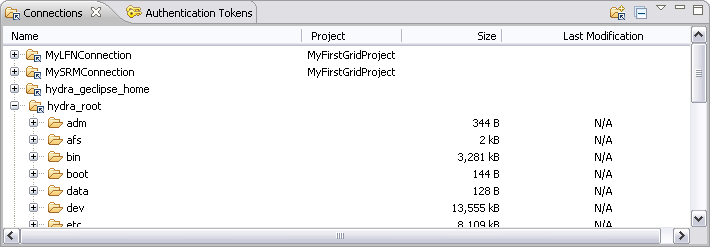
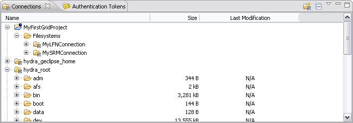
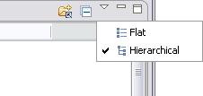

The central point for managing your connections is the Connection View.

The Connection View shows all currently defined connections, i.e. both global and local connections of all open projects. Since the Connection View is a Grid model view all actions for remote files and directories are available there. Therefore you can copy files, delete them, drag and drop them or create new files and folders.
The connections view comes with two view modes. The first mode (flat) results in a flat representation of all available connections. That means that all connections are shows as children of the view's (invisible) root node. In flat mode the Connection View has an additional column for displaying the project to which a specific connection belongs. The flat mode can be seen from the screen shot above.
The second mode is called the hierarchical mode. This mode shows all available connections in a structure that is equivalent to the underlying workspace structure. Therefore local connections are shown in the context of their projects. Global connections are still direct children of the view's root node. The hierarchical mode can be seens from the screen shot beyond.

To switch from one mode to the other just select a mode from the view's drop down menu.
